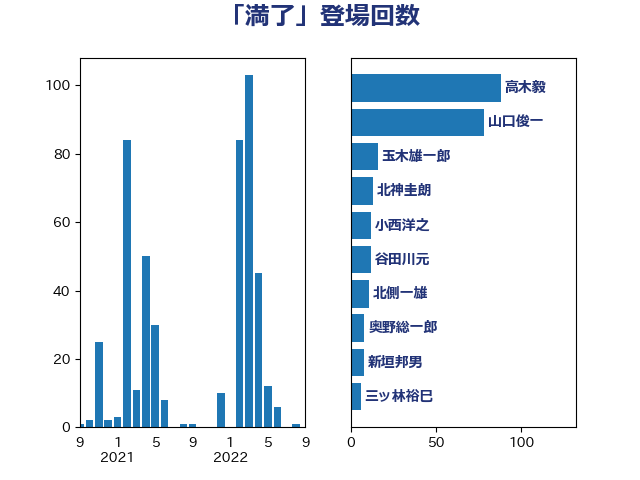

単語「満了」

| 高木毅 | 自由民主党 | 88 回 |
| 山口俊一 | 自由民主党 | 78 回 |
| 玉木雄一郎 | 国民民主党 | 16 回 |
| 北神圭朗 | 無所属 | 13 回 |
| 小西洋之 | 立憲民主党 | 12 回 |
| 谷田川元 | 立憲民主党 | 12 回 |
| 北側一雄 | 公明党 | 11 回 |
| 奥野総一郎 | 立憲民主党 | 8 回 |
| 新垣邦男 | 立憲民主党 | 8 回 |
| 三ッ林裕巳 | 自由民主党 | 6 回 |
| 古賀篤 | 自由民主党 | 6 回 |
| 山本博司 | 公明党 | 6 回 |
| 田畑裕明 | 自由民主党 | 5 回 |
| 大島敦 | 立憲民主党 | 4 回 |
| 岡田直樹 | 自由民主党 | 4 回 |
| 打越さく良 | 立憲民主党 | 4 回 |
| 新藤義孝 | 自由民主党 | 4 回 |
| 東徹 | 日本維新の会 | 4 回 |
| 沢田良 | 日本維新の会 | 4 回 |
| 熊田裕通 | 自由民主党 | 4 回 |
| 田村憲久 | 自由民主党 | 4 回 |
| 黄川田仁志 | 自由民主党 | 4 回 |
| 三木圭恵 | 日本維新の会 | 3 回 |
| 上川陽子 | 自由民主党 | 3 回 |
| 中西祐介 | 自由民主党 | 3 回 |
| 務台俊介 | 自由民主党 | 3 回 |
| 大野敬太郎 | 自由民主党 | 3 回 |
| 山下貴司 | 自由民主党 | 3 回 |
| 新谷正義 | 自由民主党 | 3 回 |
| 木原誠二 | 自由民主党 | 3 回 |
| 赤池誠章 | 自由民主党 | 3 回 |
| 赤澤亮正 | 自由民主党 | 3 回 |
| 野上浩太郎 | 自由民主党 | 3 回 |
| 階猛 | 立憲民主党 | 3 回 |
| 國重徹 | 公明党 | 2 回 |
| 小林鷹之 | 自由民主党 | 2 回 |
| 小沢雅仁 | 立憲民主党 | 2 回 |
| 杉本和巳 | 日本維新の会 | 2 回 |
| 武田良太 | 自由民主党 | 2 回 |
| 渡辺猛之 | 自由民主党 | 2 回 |
| 田所嘉徳 | 自由民主党 | 2 回 |
| 矢倉克夫 | 公明党 | 2 回 |
| 麻生太郎 | 自由民主党 | 2 回 |
| 齋藤健 | 自由民主党 | 2 回 |
| 古川禎久 | 自由民主党 | 1 回 |
| 吉川赳 | 無所属 | 1 回 |
| 堀内詔子 | 自由民主党 | 1 回 |
| 大串博志 | 立憲民主党 | 1 回 |
| 安達澄 | 無所属 | 1 回 |
| 小野泰輔 | 日本維新の会 | 1 回 |
| 山下芳生 | 日本共産党 | 1 回 |
| 山添拓 | 日本共産党 | 1 回 |
| 山谷えり子 | 自由民主党 | 1 回 |
| 岸信夫 | 自由民主党 | 1 回 |
| 川田龍平 | 立憲民主党 | 1 回 |
| 平山佐知子 | 無所属 | 1 回 |
| 平木大作 | 公明党 | 1 回 |
| 後藤茂之 | 自由民主党 | 1 回 |
| 御法川信英 | 自由民主党 | 1 回 |
| 杉尾秀哉 | 立憲民主党 | 1 回 |
| 松野博一 | 自由民主党 | 1 回 |
| 林芳正 | 自由民主党 | 1 回 |
| 横沢高徳 | 立憲民主党 | 1 回 |
| 江島潔 | 自由民主党 | 1 回 |
| 河野太郎 | 自由民主党 | 1 回 |
| 津島淳 | 自由民主党 | 1 回 |
| 浅田均 | 日本維新の会 | 1 回 |
| 浅野哲 | 国民民主党 | 1 回 |
| 浦野靖人 | 日本維新の会 | 1 回 |
| 清水貴之 | 日本維新の会 | 1 回 |
| 牧島かれん | 自由民主党 | 1 回 |
| 田中英之 | 自由民主党 | 1 回 |
| 田村智子 | 日本共産党 | 1 回 |
| 石井啓一 | 公明党 | 1 回 |
| 石川大我 | 立憲民主党 | 1 回 |
| 石橋通宏 | 立憲民主党 | 1 回 |
| 笠井亮 | 日本共産党 | 1 回 |
| 美延映夫 | 日本維新の会 | 1 回 |
| 藤井比早之 | 自由民主党 | 1 回 |
| 西村智奈美 | 立憲民主党 | 1 回 |
| 赤嶺政賢 | 日本共産党 | 1 回 |
| 金子恭之 | 自由民主党 | 1 回 |
| 馬場伸幸 | 日本維新の会 | 1 回 |